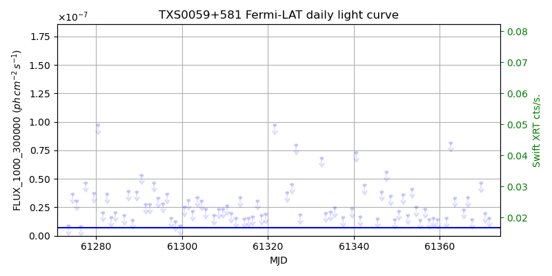
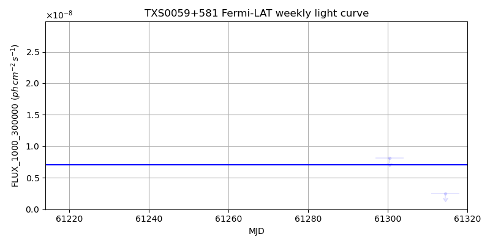

LAT Lightcurve site: https://fermi.gsfc.nasa.gov/ssc/data/access/lat/msl_lc/source/TXS_0059p581
Swift site: https://www.swift.psu.edu/monitoring/source.php?source=TXS0059+581
NED: Query
Time of last update of this page: UT: 2026-11-28 16:11 (MJD: 61372.675)
| Property | Value |
|---|---|
| R.A. | 1:02:45.84 |
| Dec. | 58:24:10.8 |
| z | 0.644 |
| 3FGL SpectrumType | LogParabola |
| 3FGL PL Index | |
| 3FGL Flux_100_300000 | 9.47e-08 1 / (s cm2) |
| 3FGL Flux_1000_300000 | 7.08e-09 1 / (s cm2) |
| 3FGL Flux >200 GeV | 3.25e-12 1 / (s cm2) |
| 3FGL Extrap. Crab >200 GeV | 0.01 |
| 3FGL Flux After EBL Absorption >200GeV | 2.99e-13 1 / (s cm2) |
| 3FGL EBL Crab Fraction >200GeV | 0.00 |
| MJD | dMJD | Flux | dFlux | Frac3FGL | FracCrab>200GeV | EBLFracCrab>200GeV |
|---|---|---|---|---|---|---|
| 61366.50 | 0.50 | 1.77e-07 | 0.00e+00 | 0.00 | 0.00 | 0.00 |
| 61367.50 | 0.50 | 6.10e-08 | 0.00e+00 | 0.00 | 0.00 | 0.00 |
| 61369.50 | 0.50 | 7.15e-07 | 0.00e+00 | 0.00 | 0.00 | 0.00 |
| 61370.50 | 0.50 | 9.65e-08 | 0.00e+00 | 0.00 | 0.00 | 0.00 |
| 61371.50 | 0.50 | 4.43e-08 | 0.00e+00 | 0.00 | 0.00 | 0.00 |

| MJD | dMJD | Flux | dFlux | Frac3FGL | FracCrab>200GeV | EBLFracCrab>200GeV |
|---|---|---|---|---|---|---|
| 61027.50 | 3.50 | 1.83e-07 | 0.00e+00 | 0.00 | 0.00 | 0.00 |
| 61041.50 | 3.50 | 2.42e-07 | 0.00e+00 | 0.00 | 0.00 | 0.00 |
| 61223.50 | 3.50 | 1.86e-06 | 0.00e+00 | 0.00 | 0.00 | 0.00 |
| 61300.50 | 3.50 | 1.06e-07 | 0.00e+00 | 0.00 | 0.00 | 0.00 |
| 61314.50 | 3.50 | 1.55e-07 | 0.00e+00 | 0.00 | 0.00 | 0.00 |

| MJD | dMJD | Flux | dFlux | Frac3FGL | FracCrab>200GeV | EBLFracCrab>200GeV |
|---|---|---|---|---|---|---|
| 61366.50 | 0.50 | 3.35e-08 | 0.00e+00 | 0.00 | 0.00 | 0.00 |
| 61367.50 | 0.50 | 1.42e-08 | 0.00e+00 | 0.00 | 0.00 | 0.00 |
| 61369.50 | 0.50 | 4.62e-08 | 0.00e+00 | 0.00 | 0.00 | 0.00 |
| 61370.50 | 0.50 | 1.99e-08 | 0.00e+00 | 0.00 | 0.00 | 0.00 |
| 61371.50 | 0.50 | 1.58e-08 | 0.00e+00 | 0.00 | 0.00 | 0.00 |

| MJD | dMJD | Flux | dFlux | Frac3FGL | FracCrab>200GeV | EBLFracCrab>200GeV |
|---|---|---|---|---|---|---|
| 61027.50 | 3.50 | 1.20e-08 | 0.00e+00 | 0.00 | 0.00 | 0.00 |
| 61041.50 | 3.50 | 2.67e-09 | 0.00e+00 | 0.00 | 0.00 | 0.00 |
| 61223.50 | 3.50 | 7.33e-07 | 0.00e+00 | 0.00 | 0.00 | 0.00 |
| 61300.50 | 3.50 | 8.11e-09 | 0.00e+00 | 0.00 | 0.00 | 0.00 |
| 61314.50 | 3.50 | 2.52e-09 | 0.00e+00 | 0.00 | 0.00 | 0.00 |
--------------------------------------------------------- Using user-supplied coords: 1:02:45.84 58:24:10.8 2000 --------------------------------------------------------- FLWO UT night of: 2026-11-29 Local Sid. @ Midnight: 04:08 Sunset (-15.0) (local, UT): 18:31 01:31 Sunrise (-15.0) (local, UT): 05:53 12:53 Moonrise (local, UT): 21:57 04:57 Moonset (local, UT): Moon phase: 0.72 --------------------------------------------------------- AzTime LSID UT Obj_el Obj_az Mn_el Mn_az Sep. --------------------------------------------------------- 18:31 22:39 01:31 53.7 31.4 -32.9 32.1 86.6 19:01 23:09 02:01 56.9 27.3 -29.4 38.9 86.8 19:31 23:39 02:31 59.5 21.9 -25.4 45.0 87.1 20:01 00:09 03:01 61.6 15.1 -21.0 50.6 87.3 20:31 00:39 03:31 62.8 7.1 -16.2 55.6 87.5 21:01 01:09 04:01 63.1 358.5 -11.1 60.2 87.8 21:31 01:39 04:31 62.5 350.0 -5.4 64.5 88.0 22:01 02:09 05:01 60.9 342.4 0.4 68.5 88.2 22:31 02:39 05:31 58.7 336.1 5.8 72.2 88.4 23:01 03:10 06:01 55.8 331.1 11.6 75.8 88.6 23:31 03:40 06:31 52.5 327.4 17.5 79.4 88.8 00:01 04:10 07:01 48.9 324.9 23.6 82.9 89.0 00:31 04:40 07:31 45.2 323.2 29.7 86.5 89.1 01:01 05:10 08:01 41.3 322.4 35.8 90.3 89.3 01:31 05:40 08:31 37.4 322.2 42.0 94.4 89.5 02:01 06:10 09:01 33.5 322.5 48.1 99.1 89.6 02:31 06:40 09:31 29.6 323.4 54.2 104.7 89.8 03:01 07:10 10:01 25.9 324.6 60.1 111.7 90.0 03:31 07:40 10:31 22.2 326.2 65.6 121.1 90.1 04:01 08:10 11:01 18.8 328.1 70.5 134.7 90.3 04:31 08:40 11:31 15.5 330.4 74.0 154.7 90.5 05:01 09:11 12:01 12.5 333.0 75.2 181.1 90.7 05:31 09:41 12:31 9.7 335.8 73.6 206.8 90.8 05:53 10:02 12:53 7.9 338.0 71.0 221.2 91.0 --------------------------------------------------------- Dark hours >55 deg.: 3.23 srcstart (UT): 2026-11-29 01:43 srcend (UT): 2026-11-29 04:57